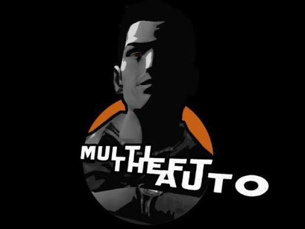

Mi hobby favorito es jugar Multi Theft Auto (MTA), una modificación multijugador para GTA San Andreas que transforma por completo la experiencia del juego base. En esta plataforma, puedes explorar una enorme ciudad virtual en tiempo real junto a miles de personas de todo el mundo y participar en una gran variedad de modalidades de juego. Lo que más me atrae es la libertad que ofrece: desde la simulación de vida en servidores de Roleplay (donde trabajas, adquieres vehículos y te relacionas con otros jugadores), hasta intensas competencias de conducción, eventos de carreras y misiones grupales. Llevo jugando alrededor de un año y, gracias a la constante creatividad de la comunidad y a los servidores personalizados que añaden nuevos sistemas e historias, siempre encuentro algo nuevo que descubrir y disfrutar cada día.

Sitio oficial de MTA| Server | Horas |
|---|---|
| Verso RP | 193h |
| Colombia Reals | 120h |
| Medallo Bxtch | 102h |
| Prado Centro RP | 260h |